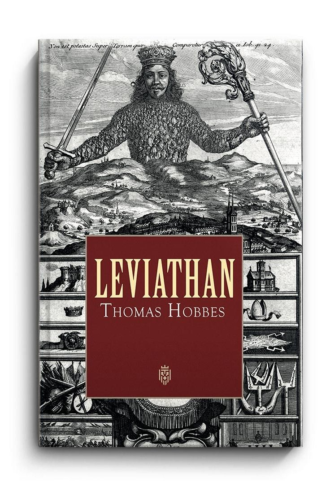

The deal Hobbes puts on the table
Imagine someone sits you down and offers you a contract. Sign it, and you will gain a common authority capable of making and enforcing rules, settling disputes, and protecting you against other people. In return, you must give up much of the freedom you would possess if there were no political authority at all. The sovereign will have the final say over public law, and you cannot simply withdraw your political obedience whenever a decision displeases you.
Most people’s first reaction is probably refusal. It sounds less like a contract than a surrender. But that reaction makes sense only if we compare Hobbes’s proposal with the relatively stable political societies most of us already know. Hobbes wants us to compare political government with something much more unsettling: a condition in which there is no common power capable of reliably restraining everyone else.
That thought experiment is at the heart of Thomas Hobbes’s Leviathan, published in 1651.[1] His question is not simply whether government is useful. It is more fundamental: why should rational people accept political authority at all? His answer begins with fear, but it ends with an argument about peace, authorization, obligation, and the conditions required for social order.
This essay follows that argument step by step: the historical crisis behind it, the state of nature, the laws of nature that point a way out, what you surrender and why the sovereign must be undivided, where resistance is possible, and how Locke, Rousseau and modern theorists responded.
Why Hobbes feared political disorder

Hobbes wrote during a period in which political authority was not an abstract classroom problem. England experienced severe political conflict during the seventeenth century, including the English Civil Wars, the execution of Charles I, and struggles over sovereignty and religion.a[3] Hobbes’s political thought was deeply concerned with the consequences of divided authority and civil conflict.
Hobbes was no detached observer. A supporter of royal authority, he left for France in 1640 as the political crisis deepened, and he wrote much of his mature political philosophy in exile.[3] He saw the quarrel between king and Parliament, and the clashing claims of religious authorities, as a vivid example of what happens when no one can say who has the final word.
This context helps explain the urgency of Leviathan. Hobbes was not merely asking what an ideal constitution would look like. He was asking what happens when people no longer agree about who has the authority to decide public questions. If competing institutions, factions, religious authorities, or individuals each claim a final right to judge, then political disagreement can become a struggle over who gets to command.
The historical setting does not by itself prove Hobbes’s theory. But it helps explain why security occupies such a central place in it. For Hobbes, civil peace is not a decorative feature of political life. Without it, the ordinary activities that make a stable society possible become precarious.
The state of nature: what happens without a common power?
Hobbes’s state of nature is a hypothetical condition in which there is no common authority with enough power to enforce rules and settle disputes.b It is not simply a claim that prehistoric humans literally lived in a permanent condition of nonstop combat. The philosophical purpose of the concept is to ask what relations between people would look like if there were no effective political power above them.
The crucial problem is not that every person is constantly violent. Hobbes’s argument is about insecurity. If people are sufficiently equal in their ability to threaten one another, if they cannot depend on a common authority, and if each person retains a right to act according to their own judgment of what is necessary for self-preservation, then even peaceful intentions cannot guarantee lasting peace.[1][3]
Hobbes’s starting point is equality of vulnerability. Even the strongest person must sleep, and can be killed by the weaker through cunning or by joining with others. From that rough equality comes equal hope of getting what one wants, and so competition when two people want the same thing that only one can have.
He identifies three main causes of quarrel: competition for gain, diffidence (distrust, and the resulting fear of attack), and glory (the pursuit of reputation). Diffidence is the most philosophically interesting, because it shows how fear alone can drive conflict: if I think you may attack me first, striking first becomes the reasonable thing to do, and you will reason the same way about me.[1]
This produces what Hobbes calls a condition of war. “War” here includes a standing disposition toward conflict: a situation in which people know that violence may occur but have no reliable institution capable of preventing it. The famous result is the bleak description of life as “solitary, poor, nasty, brutish, and short.” In such a condition there is little room for industry, agriculture, navigation, or learning, because the fruits of labor are uncertain.
The important philosophical move is therefore this: peace requires more than good intentions. It requires an authority capable of making agreements credible and preventing private disputes from escalating into private warfare.
From fear to reason: the laws of nature and the need for a sword
Hobbes does not leave people trapped in the state of nature. The same fear of death that drives conflict also gives people a reason to seek peace, and reason suggests general rules he calls laws of nature. The first is to seek peace when it can be had. The second is to be willing, when others are too, to lay down the right to all things and to be content with as much liberty against others as one would allow them against oneself. The third is to keep the covenants one makes.[1]
But knowing these rules is not enough. Hobbes calls the laws of nature “conclusions or theorems” of reason, and he does not think they can by themselves restrain people who fear that others will cheat. If I disarm and you do not, I may be destroyed. Covenants that depend on trust alone are fragile in exactly the situations where they matter most.
This is the point of his famous remark that covenants without the sword are but words. Agreements need an enforcer with enough power to punish those who break them, so that keeping the agreement becomes safe for everyone at once. Hobbes’s sovereign is therefore not an arbitrary addition to his argument. It is the solution to a specific problem: how can people who each have reason to want peace actually achieve it when none can safely go first?
What you surrender: natural right and political freedom
In the state of nature, each person possesses what Hobbes calls a natural right: the liberty to use their own power as they judge necessary for preserving their life.[1] This is an extraordinarily broad freedom because there is no common legal framework limiting what each person may claim or do.
The social contract changes that situation. Individuals authorize a sovereign to act for them in matters of public authority. They no longer retain the same unrestricted political freedom to decide every dispute according to private judgment. The point is precisely to replace a multitude of competing private judgments with a common public judgment.
That is why Hobbes’s theory can feel so severe. Modern readers often begin with the assumption that political authority must be limited by individual rights. Hobbes reverses the order of the argument. He first asks what makes political authority possible and why peace is necessary; only then does he ask what liberty remains within the resulting political order.
For Hobbes, freedom within civil society is closely connected to what the law does not forbid. This is very different from the later liberal idea that individuals possess a sphere of rights that government itself must respect. In the silence of the law, subjects may buy, sell, choose their occupation and raise their children as they see fit, but these liberties exist at the sovereign’s discretion rather than as claims against it.
Why Hobbes wants an undivided sovereign
If political authority is created to end conflict, Hobbes reasons, it cannot work if the authority itself is permanently subject to competing final authorities. A sovereign therefore needs sufficient power to make rules, enforce them, judge disputes, and maintain public peace.[1]
This is the logic behind Hobbes’s defense of sovereignty. The sovereign is not merely a powerful administrator. The sovereign is the final public authority within the commonwealth. If another institution can ultimately override the sovereign, then there is a question about which institution has the final right to decide. If competing groups each claim that right, the political problem returns.
Hobbes therefore rejects the idea that subjects may routinely treat political obedience as conditional upon their personal approval. A government that survives only while every citizen agrees with every decision would possess too little authority to settle disagreements in the first place.
For the same reason he is hostile to divided or “mixed” government, in which king, lords and commons each hold part of the final authority. In his view such an arrangement invites a contest over who really rules, and the English Civil War seemed to him to confirm it. This is also why he rejects the claim of private conscience or church authority to override the sovereign on matters of public order.
Hobbes does not insist that the sovereign must be a king. He allows that sovereignty can be held by one person, by a small group, or by an assembly of all citizens. He thought monarchy worked best, but his central argument concerns the undivided character of sovereignty rather than the number of rulers.
This does not mean Hobbes thinks every sovereign is wise, benevolent, or morally admirable. His argument is more institutional than that. The question is whether there is a sufficiently powerful common authority to prevent society from falling back into the insecurity of the state of nature. He also assigns the sovereign a purpose: the safety of the people, understood broadly to include the means of a contented life, not merely survival.[1]
Why obey the sovereign?
The deeper question is political obligation. Why should a person obey a government when they disagree with it? Hobbes’s answer is connected to authorization and self-preservation. Individuals enter political society because they have reason to escape the insecurity of the state of nature, and the authority they create must be strong enough to accomplish that purpose.
Obedience therefore cannot be based merely on affection for a ruler. Nor does Hobbes make the moral character of the sovereign the foundation of political legitimacy. The fundamental justification for political authority is the preservation of peace and security.
This creates a striking asymmetry. Subjects have powerful reasons to obey because political order protects them from the dangers of private conflict. But the sovereign is not simply another contracting party who can be treated like an employee. Hobbes’s account of the covenant is structured around individuals authorizing a common representative, rather than around the sovereign making the same contract with each citizen as an equal party.c
Authorization has a further consequence. Because subjects are treated as the authors of the sovereign’s actions, they cannot coherently accuse the sovereign of injustice toward them. Hobbes draws this conclusion deliberately, and it is among the features that most disturb later readers.
That is one reason Hobbes’s social contract differs sharply from later liberal theories. The contract explains why political authority exists, but it does not establish the same set of constitutional limits that later theorists would place upon government.
Does Hobbes leave any room for resistance?
It would be too simple to say that Hobbes believes subjects have absolutely no freedom to resist under any circumstances. Self-preservation remains fundamental to his political philosophy. A person cannot be expected to surrender every capacity for self-defense simply because they live under a sovereign.d[1]
Hobbes distinguishes between a general right of political rebellion and the individual impulse to preserve one’s own life. The first threatens the stability of the commonwealth; the second is built into the very psychology that explains why people left the state of nature.
In practice, he holds that a subject may refuse to harm himself, may resist those who come to kill or imprison him, and is not obliged to incriminate himself. Even so, these are limited exceptions to a strong duty of obedience, not a license to judge each law by private conscience.
There is a second qualification. Hobbes says subjects’ obligation lasts as long as the sovereign retains the power to protect them. If the commonwealth is conquered or collapses, the obligation lapses. This links obedience tightly to the purpose that justified it: a sovereign who can no longer protect has, in effect, lost his claim.[1]
This creates an important tension within his theory. The sovereign must possess enormous authority to maintain peace, yet the individual cannot completely cease to care about survival. Hobbes’s political system is therefore more complicated than the slogan “obey absolutely” suggests.
The distinction also shows why Hobbes remains philosophically interesting. His theory is not simply a celebration of authoritarian power. It is an attempt to derive political authority from a problem that every political system has to address: how can people with competing interests live together without making private violence the final method of resolving disagreement?
Key terms at a glance
| Term | Meaning in Hobbes |
|---|---|
| State of nature | Life without a common power able to enforce rules. |
| Natural right | The liberty to use one’s own power to preserve one’s life. |
| Laws of nature | Rules of reason that point toward peace, such as seeking peace and keeping covenants. |
| Covenant | An agreement in which people authorize a sovereign and transfer their right of self-governance to it. |
| Sovereign | The final public authority; one person or an assembly. |
| Commonwealth | The political community united under a sovereign, which Hobbes calls the “Leviathan.” |
Hobbes versus Locke: security or rights?
The easiest way to see what is distinctive about Hobbes is to compare him with John Locke. Both thinkers use the language of a state of nature and a social contract, but they draw substantially different conclusions about government.
Hobbes emphasizes the danger of insecurity and therefore gives the sovereign extensive authority. Locke gives greater weight to natural rights and the idea that political power is held in trust for the protection of those rights. For Locke, government that systematically violates its purpose can lose its legitimacy, and people can have a right to resist or replace it.e[2][4]
| Question | Hobbes | Locke |
|---|---|---|
| Main political problem | Insecurity, conflict, and the absence of a common power | Insecurity and the inadequate protection of natural rights |
| Purpose of government | Peace, security, and the prevention of civil conflict | Protection of natural rights and the public good |
| Sovereignty | Strong and fundamentally undivided | Limited and held in trust |
| Right to resist | No general right to rebel against disliked government | Resistance can be justified when government violates its trust |
| Central trade-off | Liberty is restricted for security | Political power is limited to preserve rights |
The disagreement is therefore not simply “strong government versus weak government.” It concerns what the greatest political danger actually is. Hobbes fears the breakdown of common authority; Locke fears the abuse of political authority. The two thinkers identify different failure modes and design their theories accordingly.
Locke’s most memorable charge is that it would be foolish to take precautions against polecats and foxes while thinking it safe to be devoured by lions. The image targets exactly the weakness critics see in Hobbes: a sovereign strong enough to end private conflict is also strong enough to become the greatest danger of all.[2]
Common objections to Hobbes
Is the state of nature plausible? Critics argue that Hobbes’s picture of human beings is too bleak, and that most people in most circumstances cooperate. Rousseau went further, claiming that Hobbes had projected the vices of already-corrupted society back onto natural humanity, so that his “natural” person is really a product of competitive civilization.[6]
A different objection concerns consent. David Hume pointed out that most people have never actually agreed to anything, and that governments typically arise from force or custom rather than a contract, so the idea of consent cannot be the real source of obligation.[5] Defenders reply that Hobbes’s contract is best read as a rational reconstruction: it explains why a rational person would accept authority, not when anyone literally signed.
Finally, there is the worry about tyranny: if subjects cannot judge the sovereign, what prevents abuse? Hobbes’s answer is that the sovereign’s own interest in security and the stability of his rule gives some protection, and that the alternative of civil war is worse. Many readers find this reply unconvincing, which is part of why Locke and later liberals built in constitutional limits.
Hobbes today: game theory and international anarchy
Hobbes’s reasoning has proved remarkably durable. His claim that individually rational people can end up in collective disaster unless an enforcer changes their incentives resembles the structure later studied in game theory, such as the prisoner’s dilemma and problems of assurance. Philosophers such as David Gauthier have developed modern “contractarian” theories explicitly in a Hobbesian spirit.[7]
Hobbes also noted that sovereign states stand toward one another in something like a state of nature, since no world authority can reliably enforce rules among them. That observation influenced “realist” theories of international relations, which treat the absence of a global sovereign as a permanent source of mistrust and security competition. Whether that analogy is fair remains hotly debated.
Would you sign Hobbes’s contract today?
Now return to the original question. Would you sign the contract? If the alternative really were a condition with no courts, no enforceable agreements, no reliable public authority, and a persistent possibility of violent conflict, the bargain becomes harder to dismiss. Security is not a trivial benefit. Without some degree of security, rights and freedoms can become difficult to exercise in practice.
But modern constitutional government changes the comparison. Many contemporary states attempt to combine public security with constitutional limits, elections, judicial institutions, individual rights, and mechanisms for changing governments. That arrangement would look very different from Hobbes’s sovereign authority.
This is where Hobbes’s thought experiment remains useful. He forces us to ask what we expect political institutions to provide before we complain about the restrictions they impose. How much authority is necessary to maintain public order? When does security become domination? Can a state preserve peace without concentrating too much power? And what should happen when the government itself becomes the source of insecurity?
These questions belong to political philosophy, but they are not confined to philosophy departments. They appear whenever societies debate policing, emergency powers, surveillance, civil liberties, constitutional limits, public safety, or the relationship between individual freedom and collective security.
Hobbes does not give us an easy answer. He gives us an uncomfortable starting point: freedom is not meaningful if people cannot live securely enough to exercise it. His critics respond with an equally uncomfortable warning: security is not enough if the authority providing it becomes powerful enough to destroy the freedom it was supposed to protect.
The real question behind the contract
The most interesting part of Hobbes’s social contract is therefore not whether we personally like absolute sovereignty. It is the structure of the dilemma. Political life requires some common rules and some authority capable of enforcing them, but every increase in political power raises the possibility of abuse.
Hobbes begins from the fear of anarchy. Later liberal thinkers increasingly emphasized the fear of tyranny. Modern constitutionalism can be understood, in part, as an attempt to take both fears seriously: preserve enough authority to maintain order while constructing institutions capable of restraining authority itself.
So perhaps the question is not simply, “Would you sign Hobbes’s contract?” The more revealing question is: what would you be willing to surrender for security, and what would you refuse to surrender even for peace?
Frequently asked questions
What is Hobbes’s social contract?
Hobbes’s social contract is the political arrangement through which individuals authorize a common sovereign to act on their behalf so that peace and security can be maintained. Individuals give up much of their natural freedom to act on private judgment in exchange for protection from the insecurity of the state of nature.
What is Hobbes’s state of nature?
Hobbes’s state of nature is a condition in which there is no common power capable of keeping people in check. Because individuals retain the right to use their own judgment in pursuing self-preservation, conflict and insecurity become persistent possibilities.
What did Hobbes mean by life being solitary, poor, nasty, brutish and short?
Hobbes used this phrase in Leviathan to describe life in the state of nature. Without a common power to secure peace, he argued, people cannot rely on agriculture, trade, learning or lasting cooperation, because everyone lives in continual fear of violent death.
Why does Hobbes defend absolute sovereignty?
Hobbes argues that political authority must be sufficiently undivided and powerful to prevent society from falling back into conflict. If subjects or rival institutions could ultimately override the sovereign, disputes about authority could recreate the insecurity that political society was created to escape.
Did Hobbes think the sovereign had to be a king?
No. Hobbes allowed that sovereignty could be held by one person, a small group or an assembly of all citizens. He personally preferred monarchy, but his central argument is that sovereignty must be undivided, whatever form it takes.
Does Hobbes think people have any rights after entering political society?
Hobbes does not regard subjects as having unlimited political freedom, but he does not eliminate self-preservation altogether. A person cannot simply be required to will their own destruction, and Hobbes’s account distinguishes the authority of the sovereign from the irreducible instinct of self-preservation.
Can people resist Hobbes’s sovereign?
Hobbes strongly rejects a general right of subjects to rebel whenever they judge the government unjust. However, because self-preservation remains fundamental, his theory contains important qualifications concerning situations in which a subject is directly threatened with death or bodily harm.
Was the state of nature a real historical period for Hobbes?
Hobbes treats the state of nature mainly as a reasoning device about life without effective government. He does point to real analogues, such as civil war and the relations between sovereign states, but he does not claim that humanity literally began in universal war.
How does Locke differ from Hobbes?
Locke also uses a social-contract framework but gives government a more limited role. Individuals retain natural rights, government exists by consent to protect those rights, and Locke argues that people can resist or replace a government that systematically violates its trust.
Continue exploring
Hobbes’s argument becomes clearer when placed beside the thinkers and fields that responded to it.
- Read the full Thomas Hobbes biography and philosophy
- Explore John Locke and the case for limited government
- Explore Rousseau and the general will
- Explore David Hume and the critique of the original contract
- Machiavelli and political realism
- Discover political philosophy: power, freedom, justice, and the state
- Explore the philosophy of law and the nature of legal authority
- Read more philosophy essays from The Great Library of Philosophy
Further reading
- Stanford Encyclopedia of Philosophy — Hobbes’s Moral and Political Philosophy
- Stanford Encyclopedia of Philosophy — Locke’s Political Philosophy
References
-
Hobbes, Thomas. Leviathan. Ed. Richard Tuck. Cambridge: Cambridge University Press, 1996. (See especially chapters 13, 14, 15, 17, 18, 21 and 30.) ↩
-
Locke, John. Two Treatises of Government. Ed. Peter Laslett. Cambridge: Cambridge University Press, 1988. (See the Second Treatise, especially section 93 and chapters 13 and 19.) ↩
-
Lloyd, S. A., and Susanne Sreedhar. “Hobbes’s Moral and Political Philosophy.” Stanford Encyclopedia of Philosophy. plato.stanford.edu. ↩
-
Tuckness, Alex. “Locke’s Political Philosophy.” Stanford Encyclopedia of Philosophy. plato.stanford.edu. ↩
-
Hume, David. “Of the Original Contract” (1748), in Essays, Moral, Political, and Literary. ↩
-
Rousseau, Jean-Jacques. Discourse on Inequality (1755). ↩
-
Gauthier, David. Morals by Agreement. Oxford: Clarendon Press, 1986. ↩
Notes
-
The English Civil Wars ran from 1642 to 1651, and Charles I was executed in January 1649. Leviathan appeared in 1651, so it was written in the middle of these events rather than after them. ↩
-
The state of nature and the “condition of war” are discussed in chapter 13 of Leviathan. Hobbes treats the condition as a reasoning device but also points to real analogues, such as civil war and the relations between sovereign states. ↩
-
In chapters 17 and 18 of Leviathan, each person covenants with the others and authorizes the sovereign’s actions. The sovereign is not a party to that covenant, which is why Hobbes denies that subjects can break it on the ground that the sovereign has failed them. ↩
-
Hobbes discusses the liberty of subjects in chapter 21. He holds that some natural liberties cannot be given up, for example the liberty to resist those who would kill or wound you, which is why his theory is more qualified than the slogan “obey absolutely”. ↩
-
Locke’s argument that political power is held in trust, and that a government can forfeit it, appears mainly in chapters 13 and 19 of the Second Treatise. Scholars debate how far Locke was responding directly to Hobbes, so the contrast here is a comparison of positions rather than a record of a debate between the two men. ↩